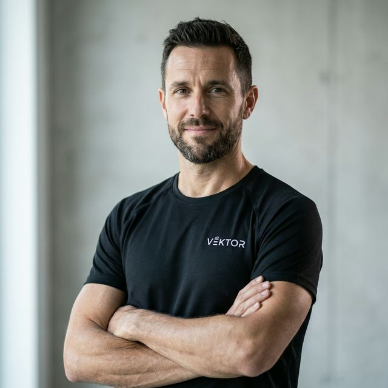

VËKTOR nace en 2018 de la frustración de tres ingenieros aeroespaciales y ex ciclistas profesionales
con la industria del ciclismo de alta gama: demasiado marketing, poca ingeniería transparente.
Después de años compitiendo con equipos profesionales y trabajando en proyectos de optimización
aerodinámica para la industria automotriz y aeronáutica, decidimos aplicar metodologías de
ingeniería rigurosa al diseño de bicicletas de competición.
Nuestro origen técnico nos diferencia: no somos una marca de lifestyle que vende bicicletas.
Somos ingenieros que resuelven problemas de rendimiento medible para ciclistas que entienden
la diferencia entre watts reales y promesas de marketing.
Desde nuestras instalaciones en Barcelona, España, diseñamos, probamos y validamos cada componente
con el mismo rigor que se aplica en competiciones de Fórmula 1 o proyectos aeroespaciales.
Nuestro Equipo

Director de Ingeniería
Dr. Marc Vilanova
Rol: Director de Ingeniería y Cofundador
Especialidad: Ingeniero Aeroespacial, PhD en Dinámica de Fluidos Computacional
15 años de experiencia en optimización aerodinámica para la industria automotriz.
Ex ciclista profesional del equipo Movistar (2008-2012). Responsable del desarrollo
de nuestros perfiles aerodinámicos y validación en túnel de viento. Publicó 23 papers
en revistas científicas sobre aerodinámica aplicada al ciclismo.
Laura Méndez
Rol: Directora de Biomecánica y Cofundadora
Especialidad: Biomecánica Deportiva, Especialista en Análisis de Movimiento 3D
Biomecánica certificada con 12 años trabajando con equipos World Tour.
Ex triatleta profesional Ironman con 8 podios internacionales. Lidera nuestro departamento
de geometría y fitting, utilizando sistemas de captura de movimiento para optimizar
posiciones de ciclistas de alto rendimiento.
Ing. Tomás Ruiz
Rol: Director de Materiales y Cofundador
Especialidad: Ingeniería de Materiales, Especialista en Composites de Carbono
Ingeniero de materiales con experiencia en la industria aeronáutica (Airbus, 2010-2018).
Experto en diseño de layups de carbono y análisis FEA. Responsable de la selección de
materiales y procesos de manufactura de todos nuestros cuadros. Certificado en ensayos
no destructivos y control de calidad de composites.
Carlos Ibáñez
Rol: Ingeniero de Pruebas y Validación
Especialidad: Ingeniero Mecánico, Especialista en Análisis de Fatiga
8 años de experiencia en pruebas de fatiga y validación de componentes mecánicos.
Ex mecánico del equipo UAE Team Emirates. Diseña y ejecuta todos nuestros protocolos
de prueba, asegurando que cada componente supere los estándares internacionales de seguridad.
Ana Torrents
Rol: Especialista en Experiencia de Cliente
Especialidad: Comunicación Técnica, Ex Ciclista Profesional
Ex ciclista profesional del equipo Movistar Women (2015-2020). Medallista en campeonatos
nacionales de contrarreloj. Responsable de traducir nuestra ingeniería compleja en
comunicación clara y honesta para clientes. Gestiona el programa de feedback de usuarios
y mejora continua.
Qué Nos Hace Diferentes
VËKTOR no compite en el mercado de bicicletas "premium" basadas en diseño y exclusividad.
Competimos en el mercado de herramientas de rendimiento para ciclistas serios.
Nuestro Enfoque
Transparencia total: Publicamos datos técnicos reales (CdA, rigidez, peso)
de cada modelo, no estimaciones de marketing.
Ingeniería sobre estética: Cada decisión de diseño tiene una razón técnica
documentada y medible.
Comunicación honesta: No prometemos "la bicicleta más rápida del mundo".
Prometemos datos verificables y mejoras cuantificables.
Servicio técnico especializado: Nuestro equipo entiende de biomecánica,
aerodinámica y fisiología, no solo de vender bicicletas.
Mejora continua basada en datos: Cada bicicleta vendida genera datos de campo
que retroalimentan nuestro proceso de diseño.
Beneficios Reales para Nuestros Clientes
Reducción medible de vatios necesarios para mantener velocidad objetivo
Optimización biomecánica personalizada basada en análisis 3D
Trazabilidad completa de componentes y garantía técnica extendida
Acceso directo a ingenieros para consultas técnicas especializadas
Actualizaciones de geometría y componentes basadas en datos de rendimiento real
Comunidad de usuarios con alto nivel técnico para intercambio de conocimiento
Nuestro compromiso: Si no podemos demostrar con datos que nuestro producto
mejora tu rendimiento de forma medible, no te lo vendemos.